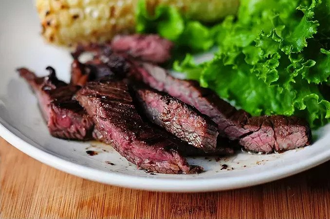

Skirt Steak

Description
Skirt steak is a thin, long cut with visible grain. It comes from the short plate or diaphragm area of the steer,
just under the rib section.
There are actually two types—the outside and the inside skirt steak. This is important to know because the texture
and tenderness will differ, especially since this cut tends to be quite lean, with some tough muscle fibers.
The outside skirt is more desirable, because it’s tender and less coarse. It will be about three to four inches
wide, about 1/2- to 1-inch thick, and noticeably longer compared to the inside cut.
The inside skirt is wider, about five to seven inches, half as thick, and yields a more chewy bite. If only the
inside skirt is available, tenderize it with a mallet to 1/4-inch thickness, plus a marinade.
Ingredients
- 1 pound skirt steak
- 1 teaspoon kosher salt, as needed for seasoning
- 1/2 teaspoon ground black pepper, as needed for seasoning
- 2 tablespoons olive oil
Directions
- Cut the steak: If the skirt steak comes in a long strip, cut into 2 or 3 smaller pieces, 5 to 7 inches in
length. This will allow them to fit better in the pan, and make them easier to slice later.
- Dry and season the steak: Thoroughly pat steaks dry with paper towels on each side. The surface should be very
dry to help brown the surface of the meat. Generously season each side of the steaks with salt and pepper.
- Heat the pan: Heat a large 12-inch cast iron skillet over high heat for 3 minutes. Once hot, add the olive oil.
- Cook the steak: Use tongs to carefully add the steak to the pan, then press down firmly on the surface a few
times for more contact. Sear the first side until browned, about 2 to 4 minutes, depending on the thickness of the
meat. Flip and cook another 2 to 4 minutes. For medium rare doneness, cook steak until it reaches an internal
temperature of 130oF. Work in two batches if needed.
- Rest the steak: Transfer steak to a cutting board, loosely cover with foil, and allow to rest for 10 minutes
before slicing.
- Slice and serve the steak: Hold the carving knife at a 45-degree angle, and then slice the steak across the
grain, about 1/4-inch thick slices. Transfer skirt steak to a serving plate.